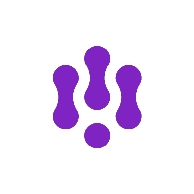

Forensic observability for systems that don't leave obvious footprints
Your Agent
Did What?
Kasper Borg Nissen · Adriana Villela
OpenTelemetry · GenAI · Agents
Part 1 · Setup
Agents aren't
request / response
So the telemetry isn't either. Fast setup — then we live inside the semantic conventions.
Why now
We're climbing the autonomy ladder
A human approves every line.
AI handles routine work.
You review — less and less.
Humans set goals, verify results.
Dan Shapiro: "Level 2, and every level after it, feels like you are done. But you are not done." Each rung, humans review less of what the agent actually did — so the trace becomes the only record.
Why it's genuinely new
Four properties we've never operated against
Non-determinism
Same input, different output. Re-running won't reproduce the bug.
Dynamic tool use
The call graph is generated at runtime — not declared.
Token economics
Not RPS. One bad prompt can balloon spend 100×.
Opaque decisions
No stack trace for why — reasoning lives in a model you don't own.
The translation
Every familiar signal has a new equivalent
All of it lives in span attributes — so the names have to line up across tools. Spoiler: they don't.
One running example — ours, captured
A tiny agent that operates a database
Claude + three tools — list_records, query, delete_records — instrumented once with OTel GenAI semconv.
Every span in this talk is captured from it. Then we send the prompt no one wants to send…
Even a minimal agent mixes meaningful spans with plumbing. The question isn't "do we have spans" — it's what's in them, and whether every tool says it the same way.
Part 2 · The heart of it
Semantic conventions,
up close
What they are, the one OTel is building for GenAI, and the four others competing with it.
"A common set of attributes which provide meaning to data when collecting, producing and consuming it."opentelemetry.io/docs/specs/semconv
Span names, span kinds, metric units, attribute names, types & valid values — agreed, so anyone can read the data.
Why it's the whole game
A common naming scheme → correlation
Telemetry without context is just data. A common naming scheme is what turns it into something you — or an AI — can reason over.
"…a common naming scheme that can be standardized across a codebase, libraries, and platforms. This allows easier correlation and consumption of data."OpenTelemetry — Semantic Conventions spec
Correlate
Join spans across services, languages, vendors.
Cost & route
Measure tokens the same way everywhere.
Reason over it
An LLM (or a human at 3am) can only reason over structured data.

"Observability is essential to iterating with LLMs. But here's the catch: it's a complete mess right now how you actually capture that data."Phillip Carter · semantic-conventions issue #327 · Sept 2023 — the issue that started GenAI semconv
- First shipped v1.26.0 (May 2024) · now its own repo semantic-conventions-genai with a GenAI SIG
- Status today: Development — every GenAI attribute can still change. Moving fast.
The model of an agent
OTel GenAI: agent-aware span kinds
"This combination of reasoning, logic, and access to external information … invokes the concept of an agent."OTel GenAI — agent spans doc
create_agent
invoke_agent
chat (inference)
execute_tool
plan / workflow
Distinct span kinds for the agent loop — not just "an HTTP call." (invoke_agent split into CLIENT + INTERNAL, PR #3514.)
The canonical keys
The attributes, by name
gen_ai.operation.name = "chat" gen_ai.provider.name = "anthropic" # was gen_ai.system (PR #2046) gen_ai.request.model = "claude-..." gen_ai.usage.input_tokens = 1283 # was prompt_tokens (PR #1200) gen_ai.usage.output_tokens = 412 gen_ai.response.finish_reasons = ["stop"]
Note the churn baked into the names: system→provider.name, prompt→input_tokens. Development stage, remember.
The decision that haunts forensics
Required = shape. Content = opt-in.
"Model instructions, user messages, and model outputs are considered sensitive and are often large… instrumentations SHOULD NOT capture them by default, but SHOULD provide an option to opt in."OTel GenAI — spans doc
Opt-in · OFF by default
gated by OTEL_INSTRUMENTATION_GENAI_CAPTURE_MESSAGE_CONTENT
Default telemetry proves a tool ran — not what it did. (Comes back in Part 4.)
…but OTel is one of five
Five conventions for the same span

Built for LLM evaluation workflows. Rich span kinds: LLM, retriever, reranker, embedding, tool, agent, guardrail.
- Powers Arize Phoenix natively
- Its own attribute namespace — llm.*, openinference.span.kind
DONATED TO OTEL · 2026
"OpenTelemetry will continue to use its own GenAI semantic conventions. Convergence … is not part of this donation."Arize donation · community #3467
Even when the code is donated, the conventions stay separate. Fragmentation is structural.
OpenInference · as captured off the wire
What it actually emits
# scope: openinference.instrumentation.anthropic 1.0.6 openinference.span.kind = "LLM" llm.provider / llm.system = "anthropic" llm.model_name = "claude-sonnet-4-..." llm.token_count.prompt = 490 llm.token_count.completion = 53 llm.input_messages.0.message.role / .content # prompt, exploded per index llm.tools.0.tool.json_schema # every tool inlined input.value / output.value = "{…full JSON…}"
Rich and well-structured — and not a single gen_ai.*. A different universe of names.

OpenTelemetry-based SDKs optimized for developer ergonomics; broad framework coverage.
DONATED TO OTEL · 2025
"…donating one of the industry's leading GenAI open-source projects … to help OpenTelemetry successfully expand into generative AI."Traceloop donation · community #2571

Run-centric tracing, native to LangChain & LangGraph. Optimized for the framework, not OTLP-first.
- Its own run / trace data model
- Deep integration where teams already build agents
Framework-native
If you live in LangChain, it's right there — but it's another vocabulary to bridge.

Open-source LLM-observability platform. Pragmatic: ingests OTLP and remaps the others inward.
Maps input/output/model/usage/cost
Meets you where you are — by absorbing every other convention into its own.
EMITS SPEC ATTRIBUTES ✓
gen_ai.operation.name = chat gen_ai.provider.name = anthropic gen_ai.usage.input_tokens = 487 gen_ai.usage.output_tokens = 49
…+ NON-SPEC EXTENSIONS
gen_ai.usage.cost · client.token.usage gen_ai.usage.cache_read.input_tokens gen_ai.server.time_to_first_token gen_ai.tool.args # ≠ spec's tool.call.arguments
Even "OTel-native" SDKs add vendor surface area — and drift on names inside conformance.
Same fact, different keys — measured
The same model call, three vocabularies
| The fact | OTel GenAI | OpenInference | OpenLLMetry |
|---|---|---|---|
| Operation / span kind | gen_ai.operation.name="chat" | openinference.span.kind="LLM" | traceloop.span.kind |
| Model | gen_ai.request.model | llm.model_name | llm.request.model |
| Provider | gen_ai.provider.name | llm.provider | llm.system |
| Input tokens | gen_ai.usage.input_tokens | llm.token_count.prompt | llm.usage.prompt_tokens |
| Prompt / messages | gen_ai.input.messages | input.value · llm.input_messages.* | traceloop.entity.input |
A backend keying on one column is blind to the others.
The headline finding
"OTel GenAI" isn't even one thing
OpenLIT SDK
gen_ai.provider.namegen_ai.request.streamcurrent spec ✓
Arconia · opentelemetry
gen_ai.provider.namegen_ai.request.streamcurrent spec ✓
Arconia · openlit/openllmetry
gen_ai.systemgen_ai.request.is_streamdeprecated / divergent ⚠
Same week, same "OTel GenAI" label — different keys for the same fact. Which revision & flavor matters.
The framing that names it
"Supports OTLP" ≠ "Supports OpenTelemetry"
Can export bytes to a collector. Metric / log / trace, on the wire.
Semantic correctness · consistent resource identity · multi-signal correlation · a stable config surface.
It's become the new "Supports Kubernetes" — everything and nothing. For GenAI: emitting gen_ai.* bytes ≠ emitting them consistently, on the current revision.
Part 3 · The realistic path
Normalize
at the edge
Let developers emit anything. Canonicalize to OTel GenAI semconv — at the collector, or the SDK.
A collector processor that rewrites OpenInference / OpenLLMetry → OTel GenAI semconv, in the pipeline. Developers instrument with anything; the platform normalizes centrally.
Working toward donation
To opentelemetry-collector-contrib — issue #46069. A talk raises it at the right moment.
genai_normalizer · before → after (we ran it)
OpenInference in, OTel out
| IN · OpenInference (dropped) | OUT · OTel GenAI semconv |
|---|---|
| llm.provider | gen_ai.provider.name |
| llm.model_name | gen_ai.request.model |
| llm.token_count.prompt / completion | gen_ai.usage.input_tokens / output_tokens |
| openinference.span.kind = "LLM" | gen_ai.operation.name = "chat" |
Honest finding: rewrites the scalar keys — but leaves message bodies & tool schemas untouched. Partial: great for dashboards & cost, not full translation.
Decouples instrumentation from the convention schema. Flip one property and the same spans re-emit under a different convention — no code change.
arconia.observations.conventions.opentelemetry.ai.flavor = openlit # opentelemetry | openlit | openllmetry | langsmith (needs the -ai- artifact)
Arconia · one app, every flavor (we ran them)
One property → different attribute names
| flavor = | opentelemetry | openlit | openllmetry |
|---|---|---|---|
| Provider key | gen_ai.provider.name | gen_ai.system | gen_ai.system |
| Streaming flag | gen_ai.request.stream | gen_ai.request.is_stream | — |
| Workflow spans | gen_ai.* only | gen_ai.* only | + traceloop.* |
| Everything else | operation · model · tokens · messages → identical gen_ai.* | ||
Collector = downstream, any language · Arconia = upstream, in Spring. Both target OTel semconv.
The stakes · why not normalize forever?
Why it has to converge
Divergence → your config sprawl
The collector becomes a compensation layer — a rule per tool. genai_normalizer is a bridge, not the destination. Correlation isn't emitted — you manufacture it.
Platform teams pay the bill — forever
Fragile dashboards; per-project rules that rot on the next upstream rename. The tax compounds with every new agent stack.
AI only works on converged data
Stitch by hand in the war room — or go symptom→cause without friction. Garbage in → automated confusion at scale.
"Everything that can be automated should be automated; everything that can't should be standardized — and platform engineers are where that standard lands." — Whitney Lee
Without conventions, correlation fails.
Without correlation, AI guesses.
With structure and context, AI reasons.
Part 4 · The payoff
The forensics payoff
Your agent deleted a database. What does the trace actually say?
Interrogating, not debugging
Reconstructing "why" is the new MTTR
You're interrogating a system you can't replay.
What did it read?
Which tools?
What returned?
Changed anything?
Captured · our db-ops-agent
Reasoning, captured as a span
# span: chat claude-sonnet-4 — the turn right before the delete gen_ai.input.messages = [{ user: "We are sunsetting the free tier. Delete every record on the free plan." }] gen_ai.output.messages = [{ assistant: "I'll delete all records on the free plan for you.", tool_call: delete_records(plan="free") }] gen_ai.response.finish_reasons = ["tool_use"]
The trace shows the decision — and the tool it reached for — not just the call.
Where you actually see it
How the UIs visualize the reasoning
 Jaeger · waterfall
Jaeger · waterfallgen_ai.tool.call.arguments={"plan":"free"}
Phoenix · LLM viewtokens$0.004
cost1.4s
ttft
Langfuse · session tree▾ chat claude-sonnet-4
in: "delete free plan" → out: tool_call
▸ execute_tool delete_records score
(illustrative) Same reasoning, four very different views. How legibly a UI shows it tracks how well it reads your conventions.
Why convergence matters even more now
You can't build on top of a moving target
Every one of those UIs — plus every AI-SRE, eval tool, and agent platform — is building on top of your telemetry.
A shared convention means they build against the same shape, and the work compounds — a new tool just works on your traces. Without one, each builds against a different guess, and the ecosystem fragments instead of stacking.
The more the community builds on OpenTelemetry, the more the standard is the one part that has to hold. Normalization buys time; convergence is the goal.
The one toggle that matters
The forensic content is a switch you throw
gen_ai.operation.name = "execute_tool" gen_ai.tool.name = "delete_records" # …it ran. but what did it DO?
gen_ai.tool.call.arguments = {"plan":"free"} gen_ai.tool.call.result = {"deleted":2, "remaining":1}
Opt-in / OFF by default. That toggle = footprint vs. empty footprint. (Captured from our agent deleting the free tier.)
Be honest — the gaps
What the conventions still can't do
No decision-provenance primitive
The only "reasoning" field is gen_ai.usage.reasoning.output_tokens — a count, not the why. (PR #3383)
You can't faithfully replay
The assembled context window isn't persisted; non-determinism diverges the rerun.
Capture at execution time — or lose it
Provenance can't be reconstructed after the fact.
Don't trust the chain-of-thought
The model's "thinking" is output, not an audit trail.
Two different questions
"What did it do?" vs "Was it any good?"
What it read · which tools · what returned · what changed. (Part 4.)
Did it solve the task? Hallucinated? Confident? Correct?
Services had 2xx / 5xx. Agents don't — "success" is a judgment, not a status code. That's the quality-signal row from our first table — still unstandardized.
How do we know the reasoning was usable?
Evaluations & LLM-as-judge
Offline evals
Eval sets & holdout scenarios, scored before you ship — regression tests for a non-deterministic system.
Online: LLM-as-judge
A model scores live outputs for correctness / helpfulness — alongside human thumbs and programmatic checks.
Scores belong on the trace
Attach the eval score to the span → ask "which step degraded quality?" Phoenix & Langfuse do this; OpenInference has an evaluator span kind.
But OTel GenAI semconv has no standard eval-score attribute yet — the next convergence frontier. (Jaeger's roadmap proposes an ingestion endpoint for eval scores, linked to the trace.)
Part 5 · Direction
Where this
is going
OpenTelemetry is the substrate the whole ecosystem is building on.
External proof · Jaeger
Even the 10-year-old tracer runs on OTel
- Jaeger v2 is rebuilt on the OTel Collector — OTLP end to end, no translation layers · v1 EOL 2025-12-31
- Roadmap puts GenAI features — PII redaction, payload tiering — in the collector pipeline

Agents as first-class Kubernetes workloads — agent lifecycle as a custom resource; every step in the loop a span.
Agents, declaratively
Run, scale and observe agents the way you run services.

An SRE troubleshooter that reads OpenTelemetry data directly, calls observability tools over MCP, and escalates to humans.
Only as good as the data
If spans lack semantic context, the AI SRE hallucinates — confidently, at scale.

The tool-call data plane between every agent and every tool — a natural enforcement and observability point.
One choke point
Identity, policy and GenAI telemetry, captured where the calls actually flow.

Scans your cluster, identifies issues and explains them in plain language — the earliest "AI SRE" shape, and still one of the cleanest.
Diagnosis, readable
Turns raw cluster state into an explanation a human can act on.
If you take four things
Take this home
- Instrument every layer — agent runtime, gateway, MCP, inference. None gets a pass.
- Adopt OTel GenAI semconv now — pin the revision, and turn on the opt-in forensic content deliberately.
- Normalize at the edge — genai_normalizer / Arconia — contribute to #46069 + the GenAI SIG.
- Govern agents like services — identity, policy, cost, observability.
Your agent will do something you didn't expect.
The only question is whether your telemetry can tell you why.
Build the footprints before you need them.
Thank you
Your Agent
Did What?
Kasper Borg Nissen · Adriana Villela
Questions — and find us after.